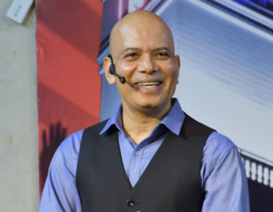
Dr. S R Mandal
President
IIT Roorkee; M.Tech, IIT Dhanbad. Former Senior V.P. at Cranes Software International and General Manager at Satyam Computers.
Corporate Leadership, Strategic Management
 Apply Now
Apply Now
Faculty
RCME's domestic faculty bring academic depth, corporate experience, and subject-area mentoring to the PGDM learning experience.

President
IIT Roorkee; M.Tech, IIT Dhanbad. Former Senior V.P. at Cranes Software International and General Manager at Satyam Computers.
Corporate Leadership, Strategic Management
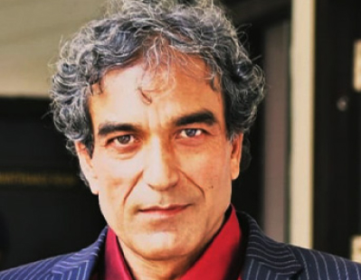
Professor & Head - Technology
IIT Bombay, IIT Kharagpur. 28+ years in senior roles with Unisys, CISCO, and JP Morgan.
Technology Leadership, Innovation, Global Technology Management
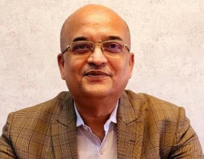
Head - Placements
Ph.D. and B.Tech. 36 years in corporate and academia; former Registrar, Presidency University.
Marketing
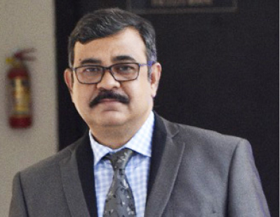
Dean - Administration
M.Sc., Jadavpur University; Fellowship Diploma in Insurance. Former State Head, Reliance Gujarat.
Administration, Insurance, Management
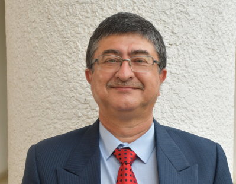
Professor of Stats, AI, ML, Business Analytics
B.Stat, M.Stat, ISI Calcutta; PGDM, XLRI Jamshedpur. Former Head, Genpact Lean Digital Transformation Team.
Statistics, AI, ML, Business Analytics
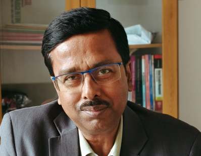
Professor of Human Resource
PGDM in IRPM with HR certifications from Tokyo and Hong Kong projects. Former Senior Vice President HR, Mizuho Bank.
Human Resource Management
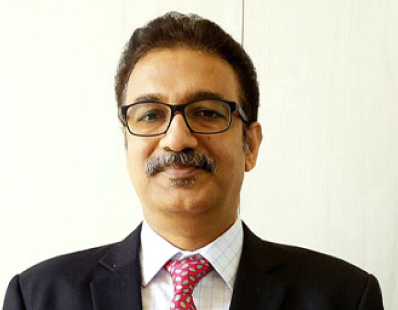
Professor & Head - Finance
M.Com, finance postgraduate background, IFRS and ITIL certified. Former AVP, Royal Bank of Scotland; experience with American Express.
Finance, Management
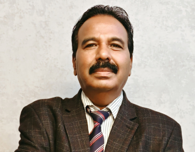
Professor, HR
Fellowship from World HR Board; postgraduate HR and training credentials; PGD in T&D, ISTD; BL, S.V. University.
HRM, Training & Development, Organizational Behavior, HR Strategy
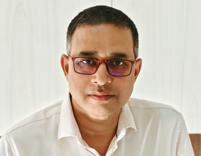
Professor - Logistics & Supply Chain Management
Six Sigma Black Belt, ISI Chennai; Lean methodology expert, QMS professional, communication and leadership coach.
Supply Chain, Six Sigma, Lean, Leadership Development
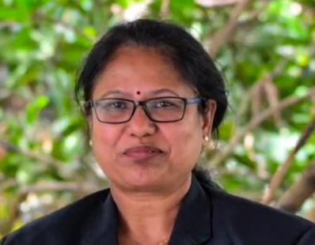
Professor
M.Com, M.Phil, Ph.D.; certified in Financial Markets from Yale University. 18 years in academia.
Economics
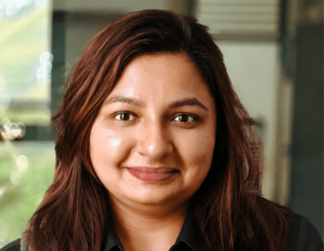
Assistant Professor - Marketing
Ph.D. Marketing, IFHE Hyderabad; BBA, BIT Mesra. Former Assistant Professor, Christ University.
Marketing Management, Consumer Behaviour, Digital Marketing, AI in Marketing
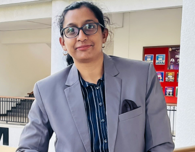
Assistant Professor - Statistics
M.Sc. in Applied Maths/Statistics with data science and analytics background. 15+ years in academia.
Statistics
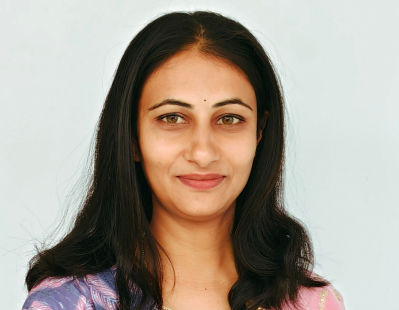
Assistant Professor, Finance and Accounts
SLET, pursuing Ph.D. Process Lead at Capgemini; cleared SLET in 2015.
Finance and Accounts
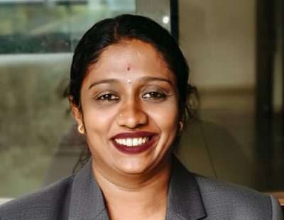
Assistant Professor
M.Com, B.Ed., and HR academic background. 12 years in academia.
Human Resource Management, Organizational Behavior
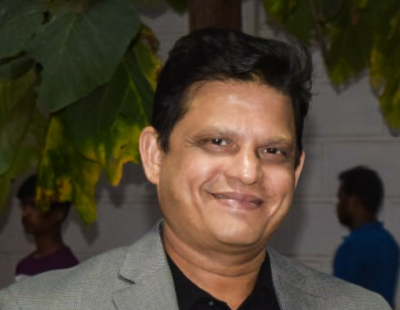
Professor of Marketing
Master of Business, UTS Sydney. 20+ years in customer acquisition, business growth, and entrepreneurship.
Marketing
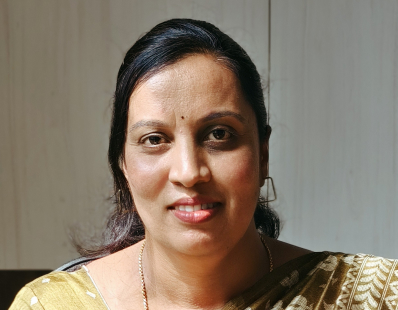
Professor of International Business
Ph.D., PGDBA, NET, KSET, MA Economics. 18 years in academia.
International Business
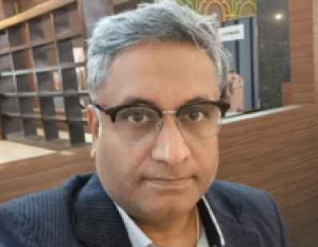
Professor of Finance
Experience with Oracle, HP, Mellen Capital, and Kyron. 28 years in corporate and academia.
Finance
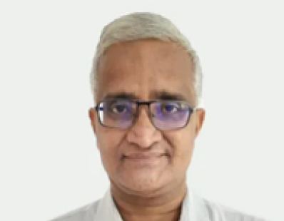
Professor - Finance
Chartered Accountant with 27+ years of experience, including 8 years in academics.
Finance